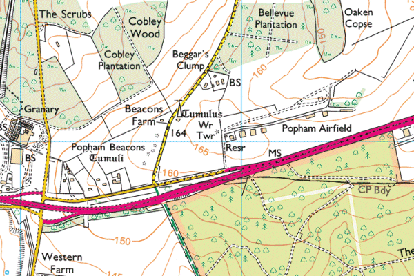

South East Schools' Inter-Counties Cross-Country Championships
Saturday 2 February at Popham Airfield, Basingstoke
Owing to the weather, the Inter-Counties Championships have been CANCELLED.
Hampshire Schools' AA are hosting the Inter-Counties Cross-Country Championships at Popham Airfield, Basingstoke in Saturday 2 February.
Race location

The postcode for Popham Airfield is SO21 3BD (Note: This postcode covers a large area so follow direction signs as you approach the airfield.)
Directions from Basingstoke (the East)
Take the M3 southbound. At Junction 8, turn off on the A303 towards Andover and the South West. Climb the hill on the dual carriageway and as you pass Popham Services (Starbucks & BP on left side, Popham Diner & Esso on right side) you should be able to see the big orange airfield windsock on the other side of the dual carriageway. Continue to about 1/2 mile and take the next exit left signed Micheldever Station & Overton. Drop down to the bottom, turn right under the A303 bridge, turn immediately right again as if rejoining the A303 towards Basingstoke. This is a two-way slip road and the airfield entrance brick and iron gates at the top of the rise on your left just 100 metres before you rejoin the A303.
Directions from Andover (the West)
Take the A303 eastbound. Note when you cross the junction of the A34 (Bullington Cross) and stay on the A303. Discount one very small road on the left (to Norton), continue to the second main exit marked with countdown boards, signed Micheldever Station and Overton. Drop down the slip road, and at the end go straight on as as if rejoining the A303 towards Basingstoke (this requires a little wiggle right and left) but the slip road is now signposted Popham Airfield. You will see the brick and iron gates of the airfield on the left, just 100 metres before rejoining the A303.
Directions from Newbury (the North)
Travel south on the A34. Pass Whitchurch. Turn left on the A303 eastbound towards Basingstoke (Bullington Cross). Follow latter part of Andover direction as above.
Directions from Winchester (the South)
Take the A34 northbound. Turn right on the A303 eastbound towards Basingstoke (Bullington Cross). Follow latter part of Andover direction as above.
Course map and Timetable
| 13:00 | Junior Girls | 3K |
| 13:20 | Junior Boys | 4K |
| 13:40 | Intermediate Girls | 4K |
| 14:10 | Intermediate Boys | 6K |
| 14:40 | Senior Girls | 5K |
| 15:05 | Senior Boys | 7K |
PLEASE NOTE: DOGS must be kept on a lead as the course is next to an active airfield.
Further information
Popham Airfield (external link)